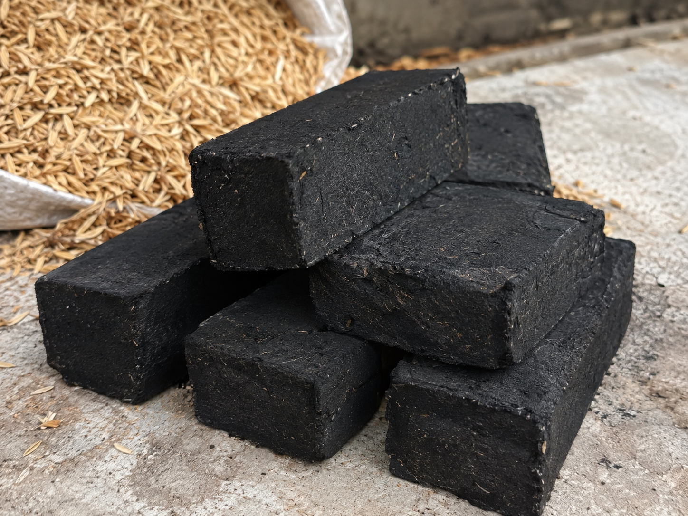
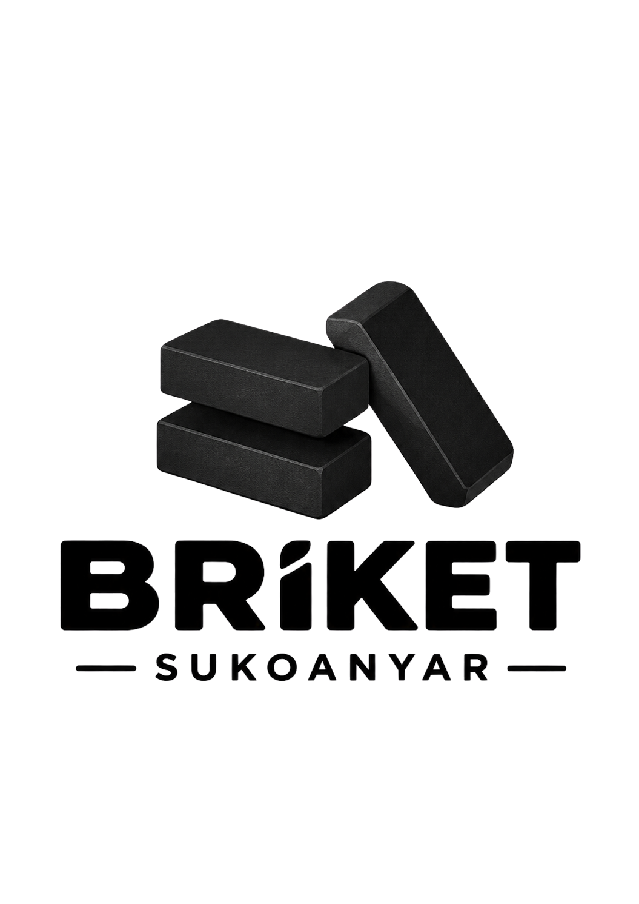
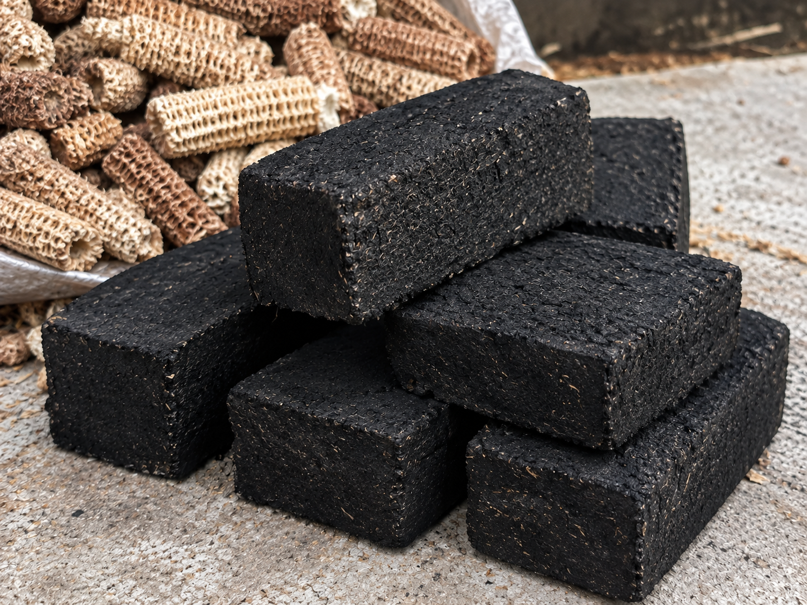
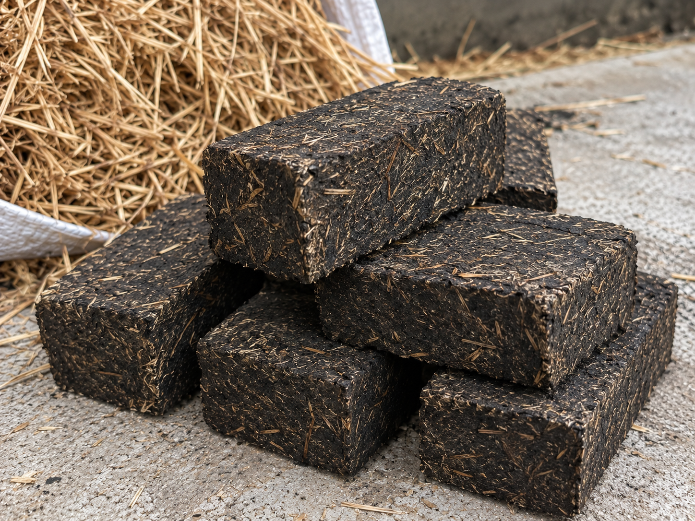
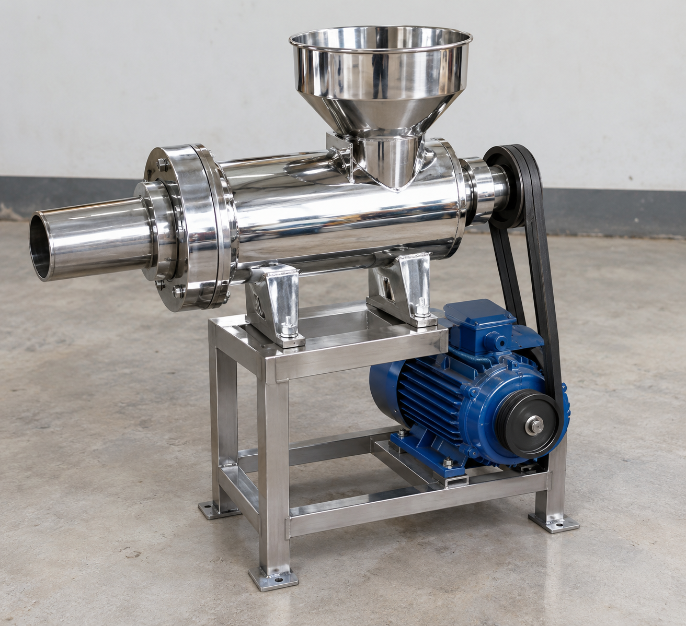
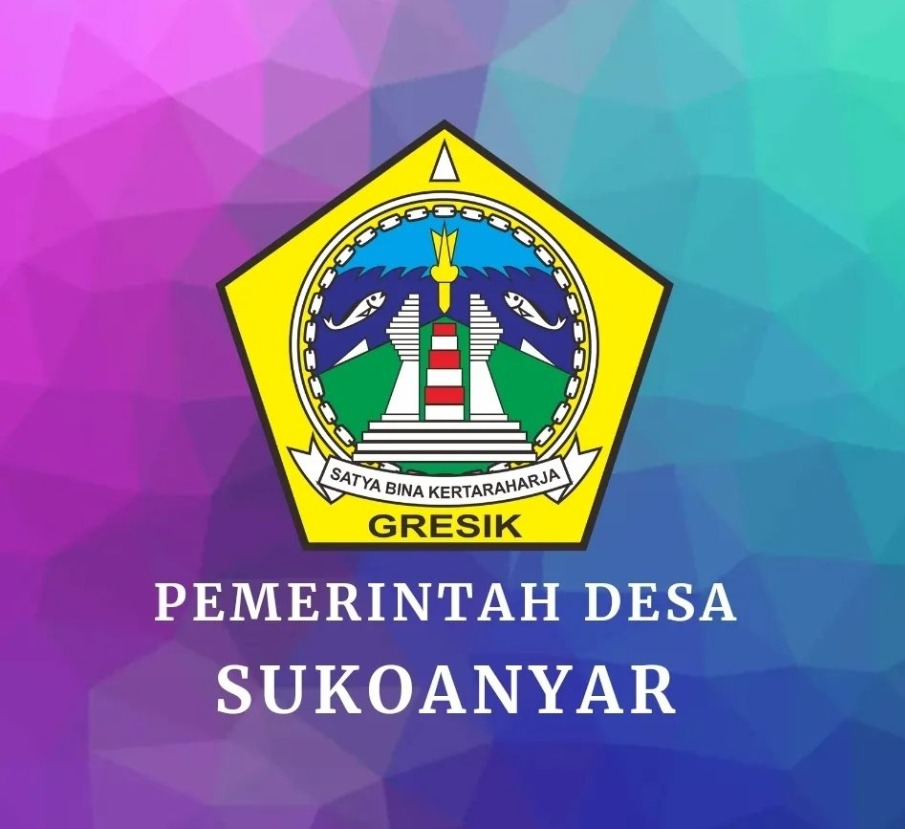

SEKAM01
Briket Sekam Padi
Dibuat dari kulit gabah yang tersisa setelah padi digiling.
Tanyakan ketersediaan →Bahan bakar dari hasil pertanian
Kami mengolah sekam padi, sisa tongkol jagung, dan jerami padi menjadi briket bahan bakar bersama masyarakat Desa Sukoanyar, Cerme, Gresik.

Dari hasil pertanian desa, untuk manfaat bersama
Tentang kami
Setelah panen, sekam padi, tongkol jagung, dan jerami padi sering tidak digunakan. Di Sukoanyar, bahan-bahan tersebut kami kumpulkan dan olah kembali.
Bersama masyarakat desa, sisa hasil panen itu dibuat menjadi briket, yaitu bahan bakar padat yang lebih mudah disimpan dan digunakan.
“Yang tumbuh dari tanah kami, kami olah kembali untuk memberi manfaat bagi desa.
Semangat Briket Sukoanyar
Pilihan briket
Briket kami dibuat dari tiga jenis sisa hasil pertanian yang mudah ditemukan di sekitar Desa Sukoanyar.

SEKAMDibuat dari kulit gabah yang tersisa setelah padi digiling.
Tanyakan ketersediaan →
JAGUNG
JERAMI
ALAT PRODUKSI
PENCETAK BRIKET
Alat yang digunakan
Alat ini kami gunakan untuk menekan campuran bahan menjadi briket. Hasilnya lebih padat, bentuknya lebih rapi, dan tidak mudah hancur saat dipindahkan.
Ukuran briket menjadi lebih seragam sehingga mudah ditata dan dikemas.
Tekanan dari alat membuat campuran lebih padat dan tidak mudah hancur.
Alat membantu mencetak banyak briket dengan lebih mudah daripada menggunakan tangan.
Cara pembuatan
Bahan dikumpulkan, dikeringkan, diolah, lalu dicetak sebelum dikemas.
Sekam padi, sisa tanaman jagung, dan jerami padi dikumpulkan dari lingkungan pertanian sekitar.
Bahan dijemur atau dikeringkan agar kandungan airnya berkurang.
Bahan diolah, dicampur, lalu ditekan dengan alat hingga berbentuk briket.
Briket yang sudah siap ditata dan dimasukkan ke dalam kemasan.

SUKOANYAR
CERME • GRESIK
Manfaat bagi desa
Sekam, tongkol jagung, dan jerami diolah agar tidak hanya dibuang.
Pembuatan briket membuka kegiatan yang dapat dikerjakan bersama masyarakat desa.
Briket dapat digunakan sebagai pilihan bahan bakar yang dibuat dari hasil pertanian sekitar.
Pertanyaan umum
Informasi awal mengenai produk dan pemesanan Briket Sukoanyar.
Bahan utama yang kami manfaatkan adalah sekam padi, sisa tanaman jagung, dan jerami padi dari lingkungan pertanian sekitar.
Briket Sukoanyar dibuat dari bahan alami seperti sekam padi, sisa tanaman jagung, dan jerami tanpa campuran bahan kimia berbahaya. Cocok digunakan untuk memasak karena tidak menghasilkan asap berlebih dan tidak meninggalkan residu beracun pada makanan. Proses pembuatannya dijaga kebersihannya sehingga aman untuk kontak dengan makanan.
Silakan hubungi kami untuk menanyakan pilihan kemasan dan ketersediaan sesuai kebutuhan Anda.
Jangkauan dan biaya pengiriman bergantung pada lokasi serta jumlah pesanan. Tim kami akan membantu memberikan informasi melalui WhatsApp.
Klik tombol WhatsApp, sampaikan jenis dan perkiraan jumlah produk yang dibutuhkan, lalu kami akan menginformasikan ketersediaannya.
Mulai percakapan
Tanyakan ketersediaan produk, pilihan kemasan, serta informasi pengiriman langsung kepada kami.
Chat melalui WhatsApp →